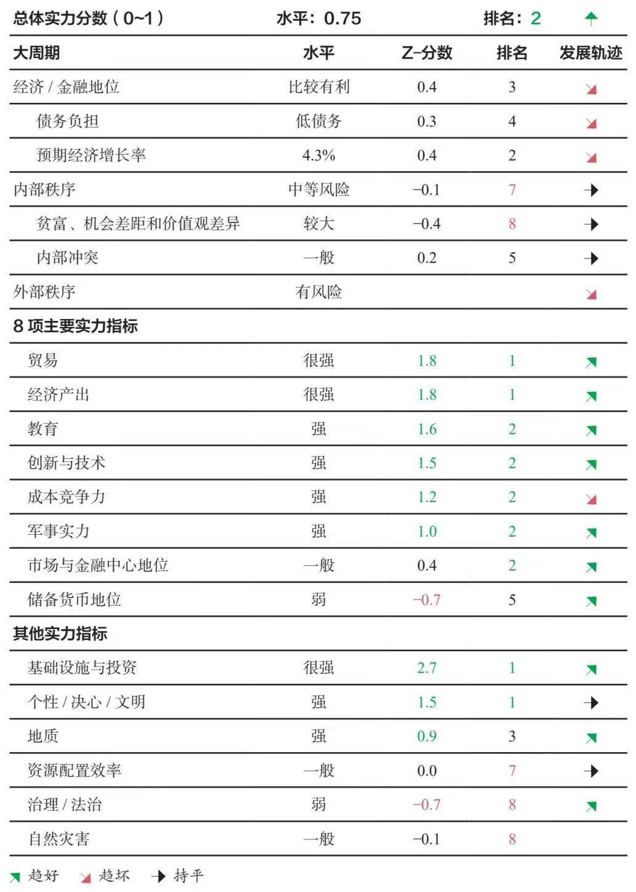

认知 01F
认知之旅 day31
【长周期认知补充（十三）】
- 在全书正文的末尾，达利欧讲到：
对政策制定者、他们的上司和其他感兴趣的人，我还想说：使用我给你们的测量方法，或者根据统计数字构建自己的测量方法，来(1)衡量你的国家和你感兴趣的其他国家的健康程度；(2)看其健康程度是在改善还是在变差，以及以何种方式改善或变差；(3)改变未来的决定因素，以赢得更好的未来。- 今天这篇认知之旅的主要内容：
达利欧构建衡量国家实力的相关指标说明，以及对美国、中国、欧元区、德国、日本、印度、英国、法国、荷兰、俄罗斯、西班牙这些国家的指标分析总结。参考内容部分节选整合自《原则：应对变化中的世界秩序》的“附录 对世界主要国家现状与前景的计算机分析”。
每一项指标的更多细节
• 教育：这一指标衡量基础教育和高等教育，两方面的份量大致相同。其中一半权重衡量的是受过各种级别的教育的绝对人数，另一半衡量的是质量，如高校排名、考试成绩和平均受教育年限。美国在这一指标上排名最高（原因是高等教育在绝对与相对指标上的良好表现），中国紧随其后（原因是受过良好教育的人口规模大）。
• 创新与技术：这一指标衡量发明创造、技术进步与创业精神。其中一半权重衡量一国在关键创新指标（如专利、科研人员人数、研发开支和风险投资资金）中所占的绝对份额，另一半衡量外部排名和人均创新指标的综合（用来反映经济中创新的广泛程度）。美国由于在各种指标上的实力，在这一指标中排名第一；中国由于研发开支、科研人员人数和专利占全球的巨大份额，排名第二并正在这一领域迅速崛起。
• 成本竞争力：这一指标衡量相对于付出的回报。这一指标值得考察的原因是，如果一国的产出成绩最佳，但成本过于高昂，这个国家的状态就不好，即使其在质量方面排名很高。我们考察根据质量和生产率因素调整之后的劳动力成本，以及其他生产率指标。主要发展中经济体（尤其是印度）在这一指标中排名最高，而美国排在中游，欧洲国家排名最低（因为劳动力成本高）。
• 基础设施与投资：这一指标衡量基础设施与投资支出的规模和质量。这一指标反映一国在全球投资中所占的绝对份额，以及一国在多大程度上优先考虑基础设施和提高生产率的投资的质量。这一指标衡量投资占全球投资的比重、基础设施的总体质量、投资和储蓄占GDP的比重以及物流表现。根据这一指标，中国目前是最强的国家（在过去20年里急剧增强），这是因为中国的生产性投资占全球投资的比例很高（相对于中国过去以及世界在这方面的投资）；美国居于第二位，主要是由于美国占全球生产性投资的比例很高，尽管其表现在逐渐变差。
• 经济产出：这一指标衡量一国的经济资源实力。我们主要通过GDP水平占世界总量的比例（根据各国价格差异调整）来衡量经济产出。我们将一些权重分配给人均GDP而不是GDP总量，以反映质量。中国在这一指标中排名第一，略微领先于美国，由于中国经购买力平价调整后的GDP占全球总量的份额很大，所以它的上升速度也最快。欧洲排名第三。
• 预期经济增长率（大经济周期）：这一指标衡量一国经济在未来10年的增长潜力。我们通过各种指标来预估未来10年的经济增长，将2/3的权重放在预测生产率的指标上，将1/3的权重放在预测债务对经济增长影响的指标上。目前预计印度增长最快，中国次之，预计美国的增长速度将略低于平均水平，日本和一些欧洲国家增长最慢。
• 贸易：这一指标衡量一国的出口实力。这一指标考察一国出口占全球份额的绝对水平。中国得分最高（是全球最大出口国），其后是欧洲和美国。
• 军事实力：决定这一指标的主要因素是军费开支占全球的绝对份额，以及以兵员数、核武器数量和军事能力的外部指标衡量的军事实力。这一指标不考察不同地区、不同类型的军事实力，因此无法反映俄罗斯和中国在特定地理区域和特定军事技术类型上拥有的一些军事优势，也不考察联盟扮演的角色。基于这些衡量标准，美国的总体军事实力依然最强大，在军费开支和核武器计划方面遥遥领先，其核武器计划只有俄罗斯能匹敌。中国现在排名第二，地位在迅速上升。
• 金融中心地位：这一指标衡量一国金融市场和金融中心的发展水平和规模。我们考察交易份额和市值的绝对衡量标准，以及金融中心城市的外部指数。在这一指标中，美国仍以相当大的优势位居第一（主要是由于在全球股票和债券市场上所占份额巨大），中国和欧洲分别位居第二和第三。
• 储备货币地位：这一指标衡量一国的货币在多大程度上作为全球储备货币运行。我们衡量储备货币地位的标准是以一国货币计价的交易和债务所占的份额，以及央行持有的该国货币储备所占的份额。像金融中心地位一样，美国在这一指标中依然明显领先，欧洲和日本分别位居第二和第三。
• 债务负担（大经济周期）：这一指标基于以下因素：(a)相对于资产水平的债务水平，(b)外部、内部盈余和赤字的规模，(c)偿债成本相对于GDP的规模，(d)以本国货币计价的债务相对于以外国货币计价的债务的规模，(e)本国公民持有的债务相对于外国人持有的债务的规模，(f)该国的信用评级。我们之所以这样设计是因为事实证明，它是最可靠的方式，能预测货币和债务资产（接受货币的承诺）的实际价值的下降。这种下降有两种形式：一种是债务违约，其原因是没有创造足够的货币和信贷来满足过度的债务需求；另一种是贬值，其原因是创造了过多的货币和信贷来满足过度的债务需求。我构建这个指数以排除储备货币地位因素，以便观察如果一个国家失去储备货币地位，那么它将面临多大的风险。
• 内部冲突（内部秩序）：这一指标考察内部冲突和不满的程度。这一指标衡量实际的冲突事件（如抗议）、政治冲突（如党派纷争）和大众不满（基于民意调查）。在各大国中，美国在这一指标中排名最高，原因是党派纷争和内部冲突事件发生率更高，而且一直在快速上升。
• 治理/法治：这一指标衡量一国法律体系的一致性、可预测性与有利于发展和进步的程度。这一指标结合了法治指标（主要基于对在该国开展业务的商业调查）和腐败指标（基于外部腐败指数和企业调查的结合）。俄罗斯和印度在这一指数中排名最低（情况最差），而英国、荷兰和日本排名最高（情况最好），德国和美国紧随其后。
• 地质：这一指标衡量每个国家的地理状况，包括土地面积和自然资源的价值。这一指标包括能源、农业和工业金属的总产量，以反映每个国家的绝对生产能力，还包括净出口，以反映在上述每一类别上的相对自给自足能力（此外还衡量一些其他自然资源，如淡水供应量）。俄罗斯和美国排名最高（中国次之，中国更依赖其他国家来满足其自然资源需求），日本和英国排名最低。
• 贫富、机会差距与价值观差异：这一指标衡量贫富/收入、机会差距与价值观差异。这包含两个指标：(a)财富和收入不平等程度（如收入最高的1%的人相对其他人所占的份额），(b)政治冲突（如立法机构在意识形态问题上的分裂程度）。印度、美国和中国的分数最低，原因是存在非常巨大的贫富和收入差距（美国还存在明显的政治鸿沟）。表现最好的是欧洲国家和日本，其收入和财富不平等程度相对较低。
• 个性/文明/决心：这一指标试图衡量一国民众的态度在多大程度上能创造支持文明和勤奋的环境，这种环境有利于增长和进步。这一指标使用(a)针对人们对勤奋和成功的态度的调查和(b)其他衡量标准，考察一个社会对自给自足和劳动的重视程度（例如政府转移支付规模和有效退休年龄），以对这一点进行量化。中国和印度得分最高（美国位居第三），欧洲国家（尤其是西班牙和法国）得分最低。
• 资源配置效率：这一指标试图衡量一国利用本国劳动力和资本的效率。这一指标考察这个国家是否存在长期高失业问题（即没有找到有效的途径来使民众就业），债务增长能否逐渐创造相应的收入增长，关于劳动力市场刚性和获取贷款容易程度的外部指标和调查。大部分欧洲国家（特别是法国和西班牙）在这些方面得分最低，而美国和德国的得分位居前列。发展中国家（特别是俄罗斯，但也包括中国和印度）在这一指标上的得分也相当不错，因为一般而言，这些国家每一单位债务增长带来的收入增长更多。
• 自然灾害：这一指标衡量一国面对自然灾害的脆弱性和受自然灾害影响的程度。尽管很难将可能影响一国的各种自然灾害量化，但我们使用了以下标准：未来气候变化对各国GDP影响的专家评估，对各国对自然灾害防备程度的外部评估，新冠肺炎疫情的后果（因为这是一项针对自然灾害的实时测评）。我认为这个指数水平一般，质量不够高，我们还需要察知许多东西来改进。
• 外部冲突：虽然不是单个国家模型的一部分，但外部冲突指数衡量主要国家之间的经济、政治/文化和军事冲突水平。在每个类别中，我们试图提出一系列结构性指标（以构建国家间冲突的基线水平）和适时性指标（以标记超出该基线的重大升级）。例如，对于经济冲突，我们跟踪国家之间的双边贸易、关税税率以及制裁、贸易战等方面的及时消息。
对世界主要国家现状与前景的计算机分析
每个国家的文本突出显示了一些主要指标，以及每项指标中的一些统计数据，这些数据反映了我们目前看到的广泛趋势。我展示的综合指标和最终国家实力分数包括数百个独立的统计数据，我们基于相关性、质量和跨国家、跨时间的一致性对这些数据进行汇总。为了更好地反映一国的总体实力，我既考虑数量又考虑质量，但我的分析结构旨在更好地反映在竞争或战争中哪些国家会获胜。
下面每一张表显示了国家总体实力指标和主要的驱动因素、当前11个主要国家每项实力指标的排名，以及过去20年的发展轨迹。在了解一个国家时，我们先考察大周期，以及反映和驱动国家兴衰的实力指标。虽然我们逐一涉及每一项因素，但这些因素并不是彼此孤立的，它们相互作用、相互强化，推动一个国家沿着其周期前进。
1. 美国的实力和前景
这是计算机生成的截至2021年8月对美国的分析。
关键指标的最新读数显示，美国是一个强国（在当今主要国家中排名第一），正在逐渐衰落。使美国处于当前位置的关键实力是其强有力的资本市场和金融中心地位、创新与技术、高水平的教育、强大的军事力量、储备货币地位和高经济产出。美国的弱点是不利的经济/金融地位和大规模的国内冲突。目前，美国的8项主要实力指标非常强劲，但总体上呈下降趋势。特别是美国在教育领域的相对地位、在全球贸易中的重要性和相对军事实力都在下降。
对美国来说，大周期看起来是不利的。
美国在其经济和金融周期中处于不利位置，债务负担高，未来10年的预期实际增长率相对较低（每年1.1%）。美国的外债明显高于海外资产（净国际投资头寸为GDP的-64%）。非金融债务水平高（GDP的227%），政府债务水平高（GDP的128%）。这些债务的大部分(99%)以本币计价，因此美国的债务风险不太严重。美国通过降息刺激经济的能力低（短期利率为0.1%），而且美国已经在通过印钞来将债务货币化。尽管如此，拥有世界主要储备货币地位对美国极为有利。假如这一地位发生改变，这将大大削弱美国的地位。
内部混乱风险大。美国存在着巨大的贫富、收入差距和价值观差异。在不平等方面，美国收入最高的1%和10%的人分别占有19%和45%的收入（这两个比例在各主要国家中均为第二高）。内部冲突指标非常高。这一指标衡量实际冲突事件（如抗议）、政治冲突（如党派纷争）和普遍不满程度（基于民意调查）。
外部混乱风险存在。最重要的是，美国和中国正在发生重大冲突，中国在迅速崛起，（在考虑所有因素的情况下）是世界第二强国。
我们更细致地考察8项主要实力指标后可见，美国拥有各主要国家中最大的资本市场和最强有力的金融中心地位。美国的股票市场占全球市场的大多数（占总市值的55%和交易量的64%），而且全球大部分交易是以美元进行的（占55%）。此外，在各主要国家中，美国在创新与技术指标上的读数最高。美国的专利申请、研发支出和科研人员人数在全球占比很高，分别为17%、26%和26%。在各主要国家中，美国的教育实力也是最强的。美国的学士学位人数在全球占比很高(20%)。在受教育年限方面，美国的情况很好，学生的平均受教育年限为13.7年，而世界主要国家的平均受教育年限为11.5年。在衡量各国15岁学生能力的PISA（国际学生评估项目）得分中，美国大致处于中游，获得495分，而各主要国家的平均分数为483分。如表所示，美国还有一系列其他优势。
2. 中国的实力和前景

这是计算机生成的截至2021年8月对中国的分析。
关键指标的最新读数显示，中国是一个强国（在当今主要国家中排名第二），正在迅速崛起。使中国处于当前位置的关键实力是其强有力的经济/金融地位、基础设施与投资、在全球贸易中的重要性、高经济产出、民众的自给自足性和高工作勤劳度、高水平的教育和强大的军事实力。目前中国的8项主要实力指标表现较强，总体上呈急剧上升趋势。特别是在全球贸易中的重要性、创新与技术、作为金融中心的重要性三个方面，中国的地位在上升。
对中国来说，大周期看起来较为有利。
中国在其经济和金融周期中处于较为有利的位置，债务负担低，未来10年的预期实际增长率相对较高（每年4.3%）。中国的海外资产略高于外债（净国际投资头寸为GDP的12%）。非金融债务水平高（GDP的263%），但政府债务水平低（GDP的48%）。这些债务的大部分(96%)以本币计价，因此中国的债务风险不太高。中国通过降息刺激经济的能力适中（短期利率为1.9%）。
内部混乱风险适度。中国存在着相对较大的贫富、收入差距和价值观差异。在不平等方面，中国收入最高的1%和10%的人分别占有14%和41%的收入（这两个比例在各主要国家中分别为第三高和第四高）。内部冲突指标居于平均水平。
外部混乱风险存在。最重要的是，中国和美国正在发生重大冲突，美国在衰落，但（在考虑所有因素的情况下）仍是世界第一强国。
我们更细致地考察8项主要实力指标后可见，中国是各主要国家中最大的出口国。中国出口占全球总出口的14%。此外，在各主要国家中，中国的经济体量最大。中国占全球经济活动的份额很大（22%，根据各国价格差异因素调整）。在各主要国家中，中国的教育实力也是第二强。中国学士学位获得者的人数在全球占比很高(22%)。如表中所示，中国还有一系列其他优势。
3. 欧元区的实力和前景
这是计算机生成的截至2021年8月对欧元区的分析。
关键指标的最新读数显示，欧元区是一个强大的力量（在当今主要国家中排名第三），发展走势平稳。欧元区的主要实力是在全球贸易中的重要性及其储备货币地位，欧元区的弱点是其民众低于平均水平的工作勤劳度、低自给自足性与相对较差的劳动力和资本配置。目前，欧元区的8项主要实力指标还算强劲，但总体上在横向波动。
对欧元区来说，大周期看起来好坏参半。
欧元区在其经济和金融周期中处于不太有利的位置，债务负担较高，未来10年的预期实际增长率相对较低（每年0.3%）。欧元区的外债和海外资产水平相当（净国际投资头寸为GDP的0%）。非金融债务水平高（GDP的241%），但政府债务水平是当今主要国家的平均水平（GDP的104%）。欧元区通过降息刺激经济的能力非常低（短期利率为-0.5%），而且欧元区已经在通过印钞来将债务货币化。
内部混乱风险低。贫富、收入差距和价值观差异处于平均水平。在不平等方面，欧元区收入最高的1%和10%的人分别占有11%和35%的收入（这两个比例在各主要国家中分别为第八高和第七高）。内部冲突指标处于平均水平。
我们更细致地考察8项主要实力指标后可见，欧元区的出口量在各主要国家中居第二。欧元区出口占全球出口的12%。此外，在各主要国家中，欧元区的储备货币地位排名第二。全球货币储备的很大一部分是欧元(21%)，全球债务的很大一部分以欧元计价(22%)。
这个总结反映了我们对欧元区实力的总体估计。对大多数统计数据，我们使用的是欧元区8个主要国家的汇总数据。
4. 德国的实力和前景
这是计算机生成的截至2021年8月对德国的分析。
关键指标的最新读数显示，德国是一个中等强国（在当今主要国家中排名第四），发展走势平稳。德国的主要实力是强大的经济/金融地位和十分稳定的内部秩序。目前，德国的8项主要实力指标还算强劲，但总体上在横向波动。
对德国来说，大周期看起来基本上是有利的。
德国在其经济和金融周期中处于一定的有利位置，债务负担低，但未来10年的预期实际增长率很低（每年0.3%）。德国的海外资产明显高于外债（净国际投资头寸为GDP的71%）。非金融债务和政府债务水平均为当今主要国家的平均水平（分别为GDP的183%和GDP的69%）。德国的债务主要是欧元债务，因此它的债务风险较高，因为德国不能直接控制欧元。德国通过降息刺激经济的能力在欧元区中较低（短期利率为-0.5%），而且欧洲已经在通过印钞来将债务货币化。
内部混乱风险低。贫富、收入差距和价值观差异小。在不平等方面，德国收入最高的1%和10%的人分别占有13%和38%的收入（这两个比例在各主要国家中分别为第四高和第五高）。内部冲突指标低。
在8项主要实力指标中，德国总体看起来较强。德国没有我要专门指出的特别突出的优势或弱点。
5. 日本的实力和前景
这是计算机生成的截至2021年8月对日本的分析。
关键指标的最新读数显示，日本实力居中（在当今主要国家中排名第五），正在逐渐衰落。日本的主要实力是十分稳定的内部秩序。日本的弱点是不利的经济/金融地位和相对缺乏自然资源。目前，日本的8项主要实力指标还算强劲，但总体呈下降趋势，特别是日本在全球经济产出中所占的份额、在全球贸易中的重要性及其创新与技术都在下滑。
对日本来说，大周期看起来基本上好坏参半。
日本在其经济和金融周期中处于不利位置，债务负担较高，未来10年的预期实际增长率非常低（每年0%）。日本的海外资产明显高于外债（净国际投资头寸为GDP的68%）。非金融债务水平很高（GDP的400%），政府债务水平也很高（GDP的241%）。这些债务的大部分(99%)以本币计价，因此日本的债务风险不太严重。日本通过降息刺激经济的能力极低（短期利率为-0.1%），而且已经在通过印钞来将债务货币化。
内部混乱风险低。贫富、收入差距和价值观差异小。在不平等方面，日本收入最高的1%和10%的人分别占有12%和43%的收入（这两个比例在各主要国家中分别为第六高和第三高）。内部冲突指标低。
在8项主要实力指标中，日本总体看起来较强。日本没有我要专门指出的特别突出的优势或弱点。
6. 印度的实力和前景
这是计算机生成的截至2021年8月对印度的分析。
关键指标的最新读数显示，印度实力居中（在当今主要国家中排名第六），正在逐渐崛起。印度的关键实力是强有力的经济/金融地位及其具有成本竞争力的劳动力（在考虑质量因素调整后的基础上）。印度的弱点是大规模的国内冲突，教育方面的实力相对较弱，创新与技术方面表现差，腐败和法治不健全，以及缺乏储备货币地位。目前，印度的8项主要实力指标还算强，总体呈上升趋势，特别是印度的相对军事实力、创新与技术和在全球贸易中的重要性都在提升。
对印度来说，大周期看起来好坏参半。
印度在其经济和金融周期中处于非常有利的位置，债务负担较低，未来10年的预期实际增长率高（每年6.3%）。印度的外债略高于海外资产（净国际投资头寸为GDP的-12%）。非金融债务水平低（GDP的125%），但政府债务水平是当今主要国家的平均水平（GDP的75%）。这些债务的大部分(91%)以本币计价，因此它的债务风险不太高。印度有一定的通过降息刺激经济的能力（短期利率为3.4%）。
内部混乱风险很高。印度存在着巨大的贫富、收入差距和价值观差异。在不平等方面，印度收入最高的1%和10%的人分别占有21%和56%的收入（这两个比例在各主要国家中均为第一高）。但在像印度这样的快速增长的国家，贫富悬殊不令人太过担忧，因为快速的经济增长能让所有人变得越来越富裕。
我们更细致地考察8项主要实力指标后可见，印度拥有各主要国家中最廉价的劳动力。考虑劳动者质量因素调整后，印度的劳动力成本明显低于全球平均水平。
但印度在教育方面的实力相对较弱，在创新与技术方面表现很差，而且缺乏储备货币地位。在受教育年限方面，印度的情况差，学生的平均受教育年限为5.8年，而世界主要国家的平均受教育年限为11.5年。在衡量各国15岁学生能力的PISA得分中，印度也差，分数为336分，而各主要国家的平均分数为483分。在创新与技术领域，印度的专利申请数目占全球的比例低（不到1%），研发支出占全球的比例低(3%)，科研人员人数占全球的比例不高(3%)。
7. 英国的实力和前景
这是计算机生成的截至2021年8月对英国的分析。
关键指标的最新读数显示，英国实力居中（在当今主要国家中排在后半部分），发展走势平稳。英国的主要实力是强有力的法治与腐败程度低。英国的弱点是不利的经济/金融地位和相对缺乏自然资源。目前，英国的8项主要实力指标较弱，总体上在横向波动。
对英国来说，大周期看起来基本上是不利的。
英国在其经济和金融周期中处于不利位置，债务负担高，未来10年的预期实际增长率相对较低（每年0.9%）。英国的外债略高于海外资产（净国际投资头寸为GDP的-28%）。非金融债务水平高（GDP的260%），但政府债务水平是当今主要国家的平均水平（GDP的106%）。这些债务的大部分(90%)以本币计价，因此英国的债务风险不太高。英国通过降息刺激经济的能力低（短期利率为0.1%），而且英国已经在通过印钞来将债务货币化。
内部混乱风险适度。贫富、收入差距和价值观差异相对较大。在不平等方面，英国收入最高的1%和10%的人分别占有13%和36%的收入（这两个比例在各主要国家中分别为第五高和第六高）。内部冲突指标处于平均水平。
在8项主要实力指标中，英国总体看起来较弱。英国没有我要专门指出的特别突出的优势或弱点。
8. 法国的实力和前景
这是计算机生成的截至2021年8月对法国的分析。
关键指标的最新读数显示，法国实力居中（在当今主要国家中排在后半部分），发展走势平稳。使法国处于当前位置的主要弱点是不利的经济/金融地位、民众低于平均水平的工作勤劳度和低自给自足性，以及相对较差的劳动力和资本配置。目前，法国的8项主要实力指标有些弱，总体上在横向波动。
对法国来说，大周期看起来基本上是不利的。
法国在其经济和金融周期中处于不利位置，债务负担较高，未来10年的预期实际增长率相对较低（每年0.4%）。法国的外债略高于海外资产（净国际投资头寸为GDP的-25%）。非金融债务水平高（GDP的268%），但政府债务水平是当今主要国家的平均水平（GDP的105%）。法国的债务主要是欧元债务，因此它的债务风险较高，因为法国不能直接控制欧元。法国通过降息刺激经济的能力在欧元区中较低（短期利率为—0.5%），而且欧洲已经在通过印钞来将债务货币化。
内部混乱风险低。贫富、收入差距和价值观差异小。在不平等方面，法国收入最高的1%和10%的人分别占有10%和32%的收入（这两个比例在各主要国家中均为第九高）。内部冲突指标居于平均水平。
在8项主要实力指标中，法国总体看起来较弱。法国没有我要专门指出的特别突出的优势或弱点。
9. 荷兰的实力和前景
这是计算机生成的截至2021年8月对荷兰的分析。
关键指标的最新读数显示，荷兰实力居中（在当今主要国家中排在后半部分），发展走势平稳。荷兰的主要实力是十分稳定的内部秩序和强有力的法治以及腐败程度低。荷兰的弱点是相对较弱的军事实力和相对昂贵的劳动力（在考虑质量因素调整后的基础上）。目前，荷兰的8项主要实力指标较弱，总体上在横向波动。
对荷兰来说，大周期看起来比较有利。
荷兰在其经济和金融周期中处于比较有利的位置，债务负担低，但未来10年的预期实际增长率相对较低（每年1%）。荷兰的海外资产明显高于外债（净国际投资头寸为GDP的90%）。非金融债务水平高（GDP的286%），但政府债务水平低（GDP的53%）。荷兰的债务主要是欧元债务，因此它的债务风险较高，因为荷兰不能直接控制欧元。荷兰通过降息刺激经济的能力在欧元区中较低（短期利率为-0.5%），而且欧洲已经在通过印钞来将债务货币化。
内部混乱风险低。贫富、收入差距和价值观差异小。在不平等方面，荷兰收入最高的1%和10%的人分别占有7%和29%的收入（这两个比例在各主要国家中均为第十高）。内部冲突指标低。
在更细致地考察8项主要实力指标后，我们要指出荷兰相对较弱的军事实力和相对昂贵的劳动力（在考虑质量因素调整后的基础上）。荷兰的军费开支占全球的比例低（不到1%），军人人数占全球的比例低（不到1%）。在劳动力成本方面，在考虑劳动者质量因素调整后，劳动力成本比全球平均水平略高。
10. 俄罗斯的实力和前景
这是计算机生成的截至2021年8月对俄罗斯的分析。
关键指标的最新读数显示，俄罗斯实力居中（在当今主要国家中排在后半部分），发展走势平稳。俄罗斯的主要实力是强大的经济/金融地位、自然资源丰富和相对较强的军事实力。俄罗斯的弱点是相对较小的经济规模、腐败和法治不健全，以及相对不是一个重要的全球金融中心。目前，俄罗斯的8项主要实力指标较弱，总体上在横向波动。
对俄罗斯来说，大周期看起来比较有利。俄罗斯在其经济和金融周期中处于比较有利的位置，债务负担低，未来10年的预期实际增长率不高（每年2.5%）。俄罗斯的海外资产略高于外债（净国际投资头寸为GDP的33%）。非金融债务水平低（GDP的99%），政府债务水平也低（GDP的14%）。俄罗斯相当大比例的债务(25%)是以外币计价的，因此它的债务风险较高。俄罗斯通过降息刺激经济的能力高（短期利率为6.6%）。
内部混乱风险适度。内部冲突指标居于平均水平。这一指标衡量实际冲突事件（如抗议）、政治冲突（如党派纷争）和普遍不满程度（基于民意调查）。
我们更细致地考察8项主要实力指标后可见，俄罗斯的军事实力相对较强。它的军费开支占全球的比例不低(7%)，军人人数占全球的比例较高(13%)。
但俄罗斯的经济规模相对较小，相对来讲不是重要的全球金融中心。俄罗斯股票市场在全世界的占比低（总市值不到1%，交易量不到1%）。
11. 西班牙的实力和前景
这是计算机生成的截至2021年8月对西班牙的分析。
关键指标的最新读数显示，西班牙实力居中（在当今主要国家中排在后半部分），发展走势平稳。使西班牙处于当前位置的主要弱点是不利的经济/金融地位、相对较差的劳动力与资本配置、在全球贸易中相对较低的重要性，以及创新与技术方面表现差。目前，西班牙的8项主要实力指标较弱，总体上在横向波动。
对西班牙来说，大周期看起来基本上是不利的。
西班牙在其经济和金融周期中处于不利位置，债务负担高，未来10年的预期实际增长率极低（每年0%）。西班牙的外债明显高于海外资产（净国际投资头寸为GDP的-73%）。非金融债务水平高（GDP的249%），政府债务水平高（GDP的114%）。西班牙的债务主要是欧元债务，因此它的债务风险较高，因为西班牙不能直接控制欧元。西班牙通过降息刺激经济的能力在欧元区中较低（短期利率为-0.5%），而且欧洲已经在通过印钞来将债务货币化。
内部混乱风险适度。贫富、收入差距和价值观差异处于平均水平。在不平等方面，西班牙收入最高的1%和10%的人分别占有12%和34%的收入（这两个比例在各主要国家中分别为第七高和第八高）。内部冲突指标居于平均水平。
在更细致地考察8项主要实力指标后，我们要指出西班牙在全球贸易中的重要性相对较低，在创新与技术方面表现差。西班牙只占全球出口量的2%。在创新与技术方面，西班牙专利申请数目占全球的比例低（不到1%），研发支出占全球的比例低(1%)，科研人员人数占全球的比例低(1%)。